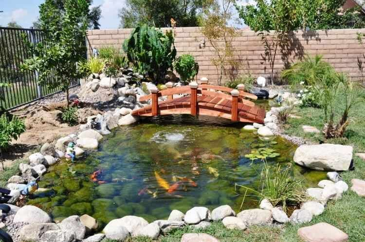
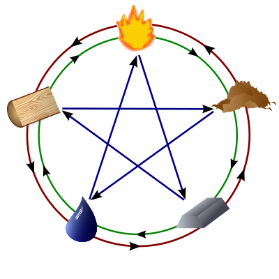
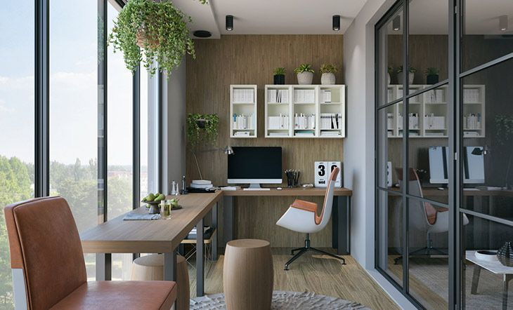

Introducción
El feng shui es una antigua práctica china que se basa en la creencia de que el entorno en el que vivimos puede afectar nuestra vida y bienestar. Se en enfoca en la creación de un ambiente armonioso y equilibrado mediante el uso del espacio, la luz, el color, el sonido y otros elementos.
Principios
Los principios básicos del feng shui incluyen el uso de la energía yin y yang, los cinco elementos (agua, fuego, madera, metal y tierra) y las ocho direcciones (norte, este, sur, oeste, noreste, sureste, suroeste y noroeste). También se consideran factores como la ubicación, la forma y la disposición de los objetos y espacios.
Aplicaciones
El feng shui se puede aplicar en muchas áreas de la vida, como en la decoración de hogares y oficinas, la planificación de jardines y paisajes, y la elección de ubicaciones para edificios y empresas. También se puede utilizar para mejorar la salud, la relación con los demás y el éxito personal y profesional.
Consejos
Aquí hay algunos consejos básicos para aplicar el feng shui en tu hogar o trabajo:
- Mantén tu espacio limpio y ordenado
- Usa plantas y flores para traer vida y energía positiva a tu espacio
- Coloca espejos estratégicamente para ampliar la sensación de espacio y atraer energía
- Usa colores suaves y cálidos para crear un ambiente relajante
- Evita acumular objetos innecesarios y trata de deshacerte de aquellos que ya no usas
- Coloca tu cama de manera que puedas ver la puerta desde ella